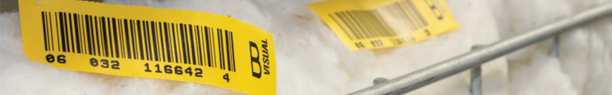

Rastreabilidade
Importância para o mercado
O sistema auxilia o trabalho de classificação por HVI - High Volume Instruments, facilitando a identificação das amostras enviadas aos laboratórios. Na classificação por HVI são medidos parâmetros como comprimento, micronaire, uniformidade e resistência, de forma a colocar no mercado um produto que atenda às exigências dos principais países compradores.
O SAI é também importante em termos de Brasil, pois a indústria têxtil nacional, que consome em torno de 1 milhão de toneladas de algodão por ano, está entre as mais desenvolvidas do mundo. A Conab - Companhia Nacional de Abastecimento, por ocasião dos leilões de compra, também exige informações que podem ser disponibilizadas através do código de barras e outros dados das etiquetas afixadas aos fardos.
Modelo Brasileiro
O modelo adotado (EAN 128 – subvenção B) foi baseado no sistema implantado pelo USDA - United States Department of Agriculture, utilizado como padrão internacional, e aceito por todos os grandes países produtores e consumidores. O modelo brasileiro vem apresentando uma evolução constante em parceria com a GS1 Brasil – Associação Brasileira de Automação. Em 2011, decidiu-se pela mudança do padrão que era GTIN (até 2010) para um código de série de unidade logística, do padrão SSCC – Serial Shipping Container Code, que é um dos mais importantes identificadores de aplicação usados na rastreabilidade de produtos, contendo 18 dígitos e o prefixo (00), sendo simples, prático e mais seguro para a rastreabilidade dos fardos de algodão, permitindo que todos os produtores e algodoeiras tenham condições de implantar o sistema sem grandes investimentos.
Vantagens para a usina/algodoeira
Para a usina/algodoeira, o sistema só traz vantagens, destacando-se, entre outras:
- Oferta de um sistema único e confiável de identificação dos fardos
- Facilidade para vender o algodão ao mercado externo
- Agilidade na obtenção dos resultados da classificação pelos laboratórios
- Participação no processo que será adotado a curto prazo por 100% dos beneficiadores, por exigência do próprio mercado e de seus clientes, e que vai afetar economicamente as usinas/algodoeiras que não aderirem.
Associação Brasileira dos Produtores de Algodão
SAF/Sul - Quadra 02, Lote 02, Bloco B, 2º andar, Sala 202, Edifício Via Office - Brasília-DF - CEP 70070-600